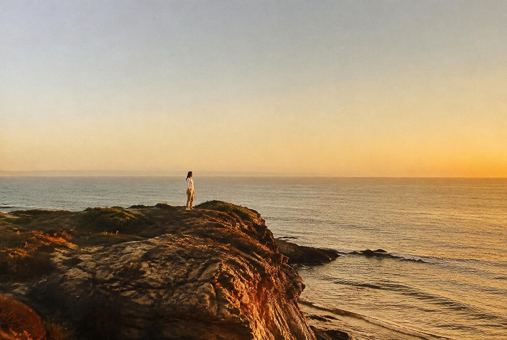
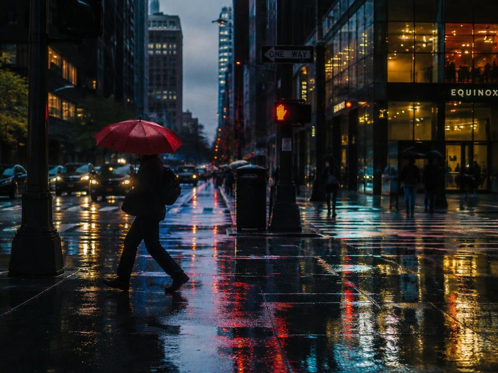
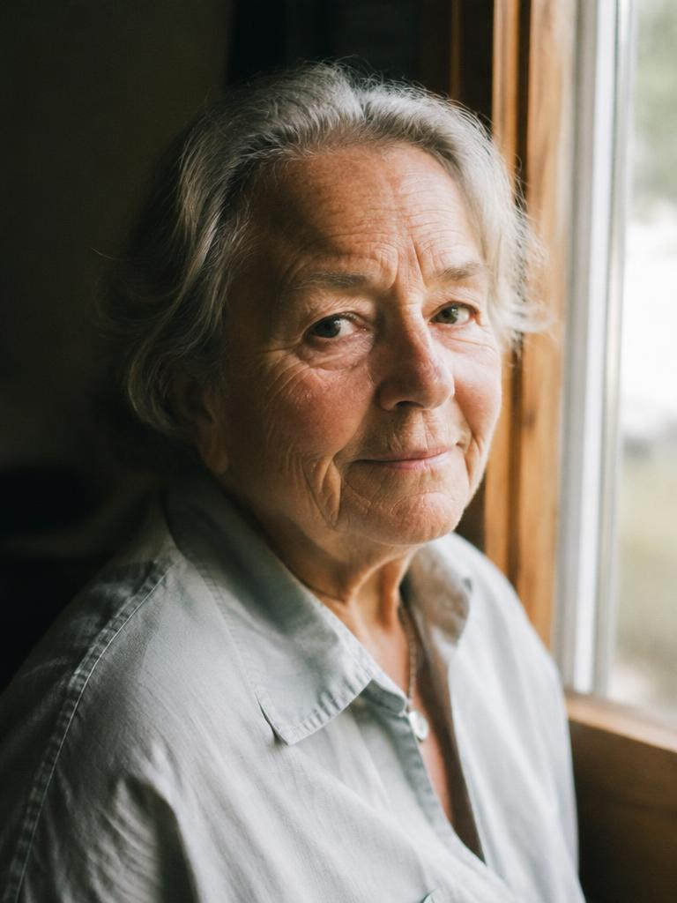
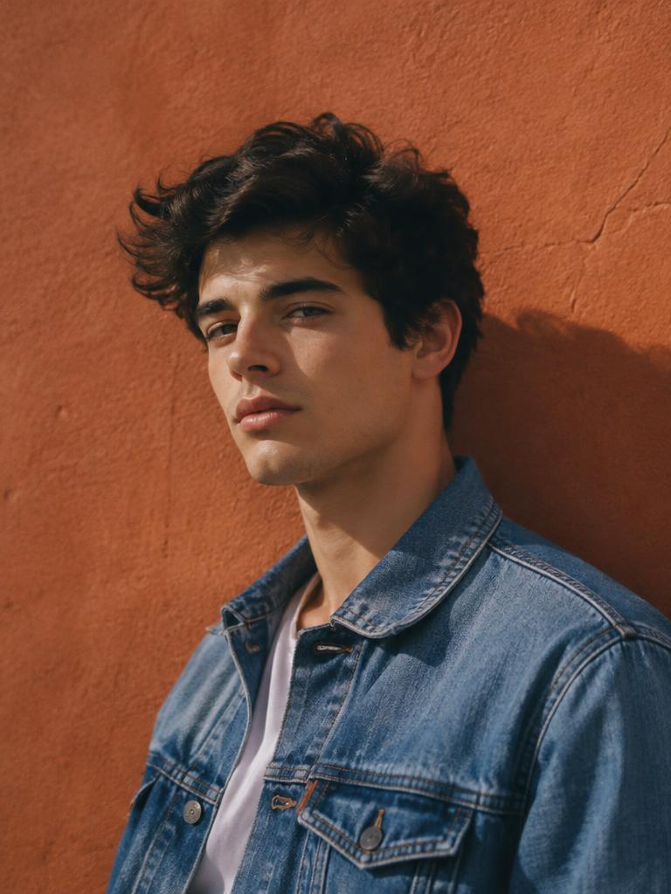
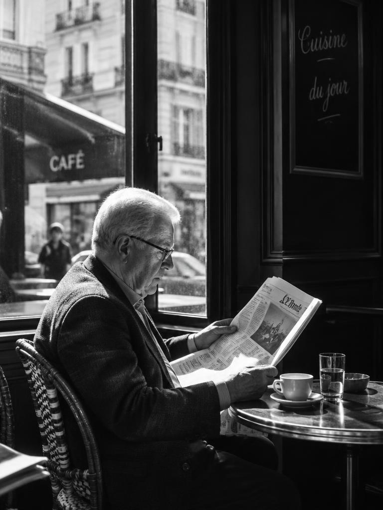
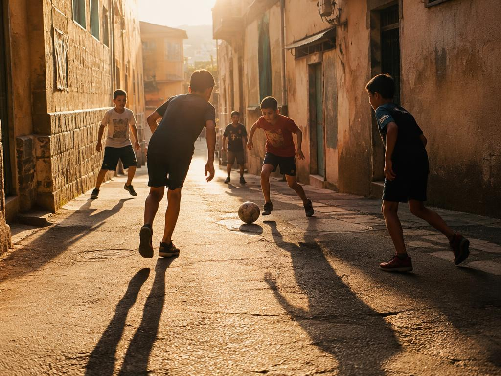
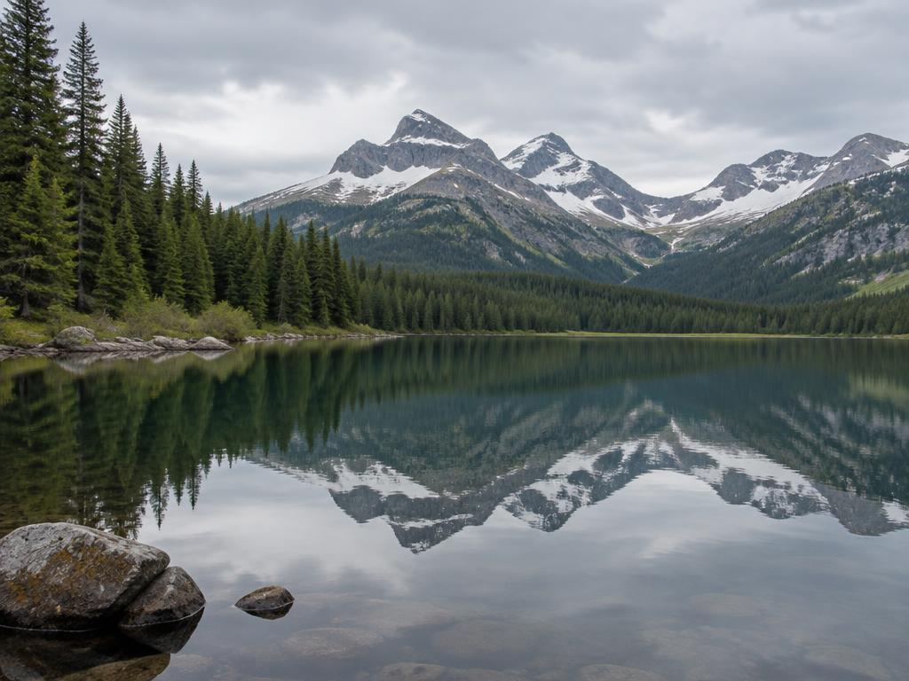

Portraits · Street · Landscape
Stories told through light.
An exploration of people, places and everyday moments— presented through a carefully curated collection of visual stories.
Explore the gallery →
01 — Selected work
Gallery
All images are AI-generated examples for this student project. Select a photograph to view it full size in a new tab.






02 — About the project
A different way of seeing.
Thabang Frame Studio is a concept photography portfolio developed by Thabang Rantoka in Pretoria, South Africa, for the BrewHaus practicum.
The collection explores natural light, human expression and everyday places..
03 — Get in touch
Let’s start a conversation.
Have a question about this portfolio or an idea for a website? Send me an email.
Email Thabang →The button opens your email app. You can also copy the address above.